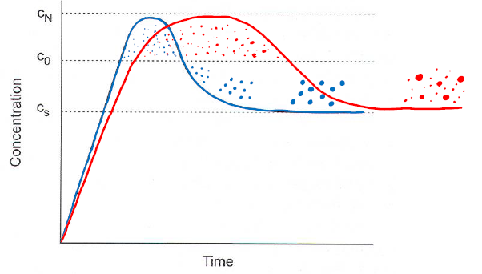
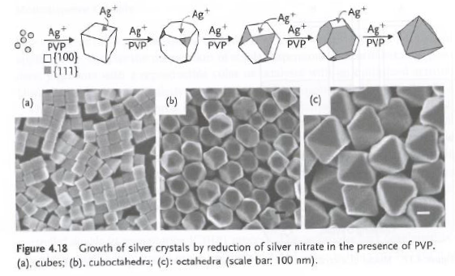
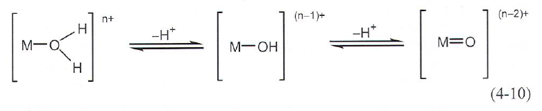
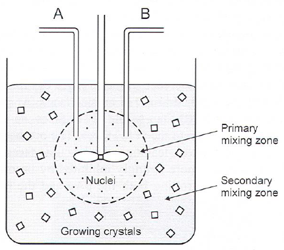
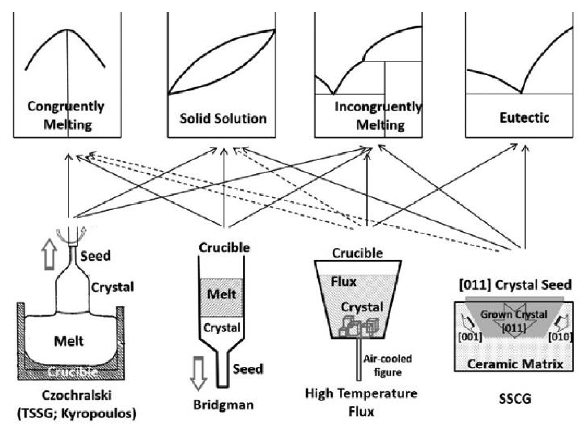

Precipitation
Overview
- Precipitation is easy, but control over crystallite size, size distribution and morphology is hard.
- Ag-halides for phoyographic emulsions is strongly dependent on size, shape and composition.
- AgNO\(_3\) -> gelation sol @ 30-80\(^\circ\)C + hard stirring
- Ag-halides for phoyographic emulsions is strongly dependent on size, shape and composition.
Processes
Each of these steps must be controlled in order to form e.g. monodisperse particles with well defined reproducible morphology:
- Nucleation
- Ostwald Ripening
- Coagulation
- Crystal growth
- Recrystallization
- Agglomeration
Monodisperse is interesting for:
- Stable dispersions
- Uniform ceramics powders
- Reproducible pigments
- Catalysts
- Nano-objects
Solvent usually H\(_2\)O. Others can be used, e.g. molten salt.
Nucleation and Growth
Decisive factors:
- Melts: Temperature
- Solutions: Concentrations
- Direct ion reactions
- Redox reactions
- Precipitation by poor solvents
- Decomposition of compounds
- Hydrolysis
Example decomposition or removal of complexing agents:
- Ag\(_2\)CO\(_3\) from NH\(_3\)
- \(\alpha\)TiHPO\(_4\)H\(_2\)O by HF
LaMer model
- Concentration increased to c\(_0\) without precipitation
- Nucleation starts at c\(_0\)
- Concentration c\(_N\) is maximum supersaturation, and the concentration can not cross this line, it will precipitate.
- Concentration decreases because of precipitation
- Growth continues below c\(_0\), without new nucleation. Ostwald ripening(works up to 5nm), size focusing(probably also a nanoeffect).
- Between c\(_S\) and c\(_N\) is called supersaturtion range.

- Particle size distribution is dependent on how much growth has happened while nucleation still happened. If all nucleation happens, and then growth, they will all be same size. If nucleating over long timeframes, while growing, the result will be many different sizes.
- Growth rate can be controlled by diffusion of solvate through solvent and rate of condensation.
Control of crystal shape
Can be controlled during growth, with two growth modes:
- Kinetic regime: Shape controlled by slowest growing surfaces. Impurities can absorb selectively on particular surfaces.
- Thermodynamic regime: Shape controlled by minimization of surface energy.
- Ex: Ag cubes grow faster on 100 planes than 111 planes, thus with time, octahedrons are formed. 
Methods
Forced hydrolysis
Precipitation of metal oxides or metal hydroxides by deprotonating the hydrated metal ions resulting in polycondensation.
- Oxide formation favoured by high M-ion charge and high pH
- Hydrolysis of M\(^{<4}\) -> aquo, hydroxy or aquo-hydroxy complexes.
- Higher valent cations form oxo or oxo-hydroxy compounds. 
Forced Jet precipitation
Introducing solutions forming sparingly soluble salts into a stirred reactor.
- Fast nucleation in injection(/mixing/nucleation) zone gives high supersaturation (10\(^5\)-10\(^8\) times)
- Growth in outer zone 
Flux method
Many different types: congruent melting, solid solution, incongruent melting, eutectic Setups (Decided by apperance of phase diagram): Czochralski, Bridgman, High-T Flux, SSCG 